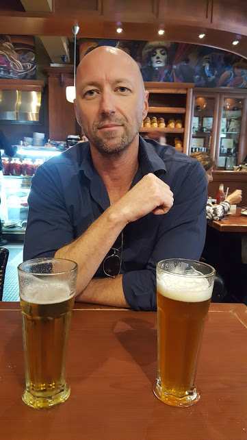

About Me
My name is Mike Hardy. I was born in Charleston, SC but wasn't there for long. I grew up in Northern California before joing the Coast Guard. The Coast Guard brought me to the East Coast where i split time between CT, NY and NJ. I love the East Coast... so much so I've been back 6 times in the last year. My most recent trip was spent in CT and Montreal. Travel has become a passion of mine.
In addition to travelling, fitness has also become a passion of mine. It's a passion that started with lifting weights. But now, I also run frequently as well as try and mix in a yoga class once a week. Exercise helps me manage the stress that work and this class bring me. I competed in my first mini-triathlon last year. It was an awesome experience. My next goal is to run a half-marathon.
Connect with Me